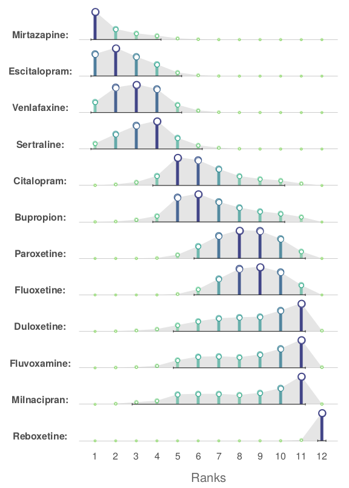

2022-08-10
It is not like visualisation is my favourite topic, but that is part of the job. The figure below is a submission to a monthly PSI Visualisation challenge.

The code ®:
library(dplyr)
library(tidyr)
library(ggplot2)
alpha <- 0.10
dta <- file.path(
"https://raw.githubusercontent.com/VIS-SIG/Wonderful-Wednesdays",
"master/data/2022/2022-07-13/bayesian_ranking.csv"
) %>%
read.csv() %>%
pivot_longer(cols = -"Treatment") %>%
mutate(
rank = gsub("^Rank(.*)$", "\\1", name),
rank = factor(rank, levels = unique(rank[order(as.numeric(rank))])),
rankx = as.numeric(rank)
) %>%
group_by(Treatment) %>%
mutate(
lci = cumsum(value) >= !!alpha / 2,
uci = rev(cumsum(rev(value))) >= !!alpha / 2,
raw_value = value,
value = (function(x) (x - min(x)) / (max(x) - min(x)))(value)
) %>%
mutate(avg = as.numeric(rank)[which.max(value)]) %>%
ungroup() %>%
mutate(
Treatment = paste0(stringr::str_to_title(Treatment), ":"),
Treatment = factor(Treatment, levels = unique(Treatment[order(avg)]))
)
ci <- dta %>%
group_by(Treatment) %>%
summarise(min = min(rankx[lci]), max = max(rankx[uci])) %>%
ungroup()
gg <- ggplot(
dta,
aes(rankx, value, color = value, alpha = value, size = value)
) +
geom_ribbon(
aes(ymin = 0, ymax = value),
fill = "gray90", color = "transparent", alpha = 1, size = 1
) +
geom_hline(yintercept = 0, color = "gray80", lwd = .1) +
geom_segment(aes(xend = rankx, yend = 0), lwd = 1) +
geom_point(shape = 21, fill = "white", stroke = .5) +
geom_point(shape = 21, fill = "white", stroke = 0, alpha = 1) +
geom_segment(
data = ci,
mapping = aes(x = min - 0.2, xend = max + 0.2, y = 0, yend = 0),
color = "gray20",
alpha = 1,
size = .25,
arrow = arrow(angle = 90, ends = "both", length = unit(0.1, "lines"))
) +
scale_color_viridis_c(direction = -1, option = "D", begin = .2, end = .8) +
scale_x_continuous(breaks = 1:12) +
scale_alpha_continuous(range = c(.3, 1)) +
scale_size_continuous(range = c(.5, 2)) +
xlab("Ranks") +
facet_grid(Treatment ~ ., switch = "y", scales = "free") +
coord_cartesian(clip = "off") +
guides(color = "none", alpha = "none", size = "none") +
theme_minimal() +
theme(
panel.grid = element_blank(),
strip.text.y.left = element_text(
margin = margin(b = 2, r = 5),
angle = 0, vjust = 0,
face = "bold",
color = "gray30",
size = 7
),
panel.spacing.y = unit(.5, "lines"),
axis.text.y = element_blank(),
axis.text.x = element_text(margin = margin(t = 5, b = 5), size = 7),
axis.title.x = element_text(color = "gray40", size = 9),
axis.title.y = element_blank()
)
gg